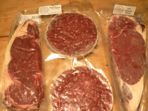
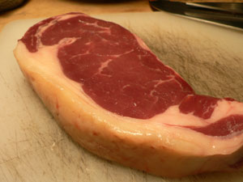
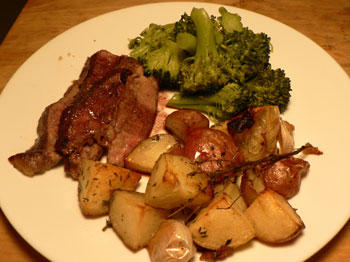

Grass-fed beef from La Cense
One of the benefits of blogging for a long time is that you start getting free stuff. A few weeks ago, I was invited to a La Cense beef tasting at the Savoy. It was in the middle of the work day, so I had to decline. However, this didn’t stop them from sending me $40 worth of beautiful, frozen beef:

That’s a giant New York strip, two steak burger patties, and a ribeye. La Cense is a ranch in Montana that sells grass-fed beef from cows raised in a “humane, stress-free environment.”
Frozen shipping is the most high-tech thing I’ve ever seen, and I felt so cool to receive such a package at work. Inside the seven-pound box was, to my ignorant surprise, a cooler, inside of which was bubble wrap and a big chunk of dry ice, which I managed to “burn” myself on because I couldn’t help touching it. The meat was frozen solid; it was colder than the food in my freezer! After sitting in a box for more than a day!
Here is a close-up of the New York strip after thawing it in cold water:

I haven’t cooked many steaks, so I went with the old reliable method of seasoning it assertively, searing it over high heat, and finishing it in the oven. It went from being bloody and rare to medium-well in what seemed like two minutes; I’ll be more careful with the next steak. Perhaps that’s a peculiarity of grass-fed beef? Nevertheless, the meat was juicy, flavorful, and tender. Here it is served with roasted potatoes and broccoli:

Thanks for dinner, La Cense!
Comments
I’m surprised the grass-fed beef would be so well-marbled; you’d think the steer would be leaner from roaming the range, foraging and all. I’m wondering is “grass-fed” is sort of a misnomer, like “free-range” has turned out to be. Maybe all they have to do is throw a few hands-full of grass in with the grain to qualify as grass-fed.
But speaking of grass-fed, our local Whole Foods has begun selling milk from grass-fed cows. Of course it is pasteurized, so those all-important enzymes have been destroyed, but it is from grass-fed cows. I haven’t tried it yet since it’s about twice as expensive as the other milk.
Oh, that beef looks lovely. And, grass-fed beef is so wonderful, isn’t it?
You’ve made me quite hungry… maybe I’ll go make a veggie burger. :P
Well, I just ate a veggie burger, since you left me hungry and I have no meat in the house. It was good with copious habanero salsa and challah, but I’m sure it paled in comparison to your steak, even if it was medium-well. I think I’ll be taking a trip to the grocery store tomorrow.
Hey, Rebecca… do you know of any butchers around here that specialize in grass-fed/free-range/no-chemicals beef?
Hi, Colin – I believe there’s at least one purveyor of the type of beef you’re looking for who frequents the Farmers Markets. And doesn’t Whole Foods claim that their beef comes from grass-fed steer?
There is a stand at the Greenmarket that has bison meat (yum, btw), and also has beef. I believe all their meat comes from frolicsome grass-munching free-rangers, though I’m not absolutely positive. they are super friendly, in any case, and would I’m sure happily answer any provenance questions!
Add a comment